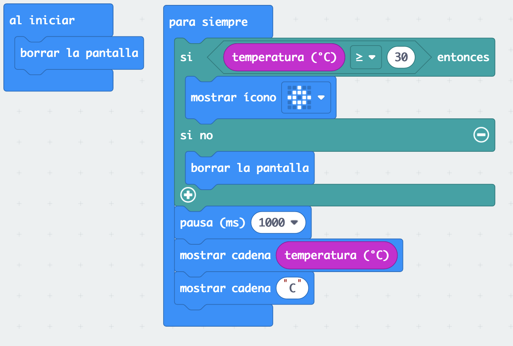
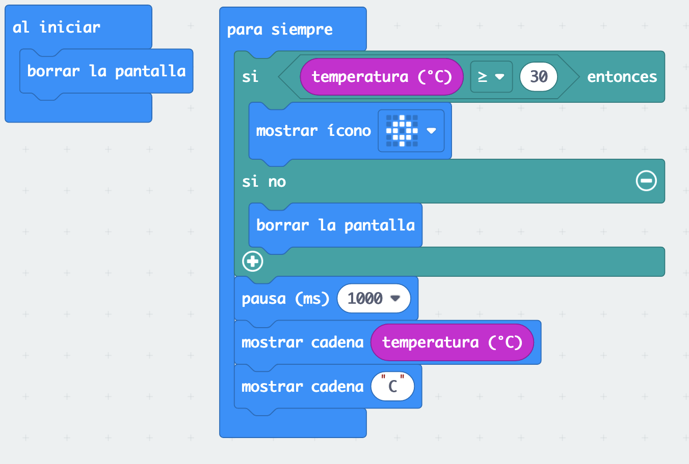

El reto consiste en que si la temperatura es mayor de 30º debe mostrar un icono de sol.
Esperar 1 segundo y mostrar la temperatura.

El reto consiste en que si la temperatura es mayor de 30º debe mostrar un icono de sol.
Esperar 1 segundo y mostrar la temperatura.

Obra publicada con Licencia Creative Commons Reconocimiento Compartir igual 4.0